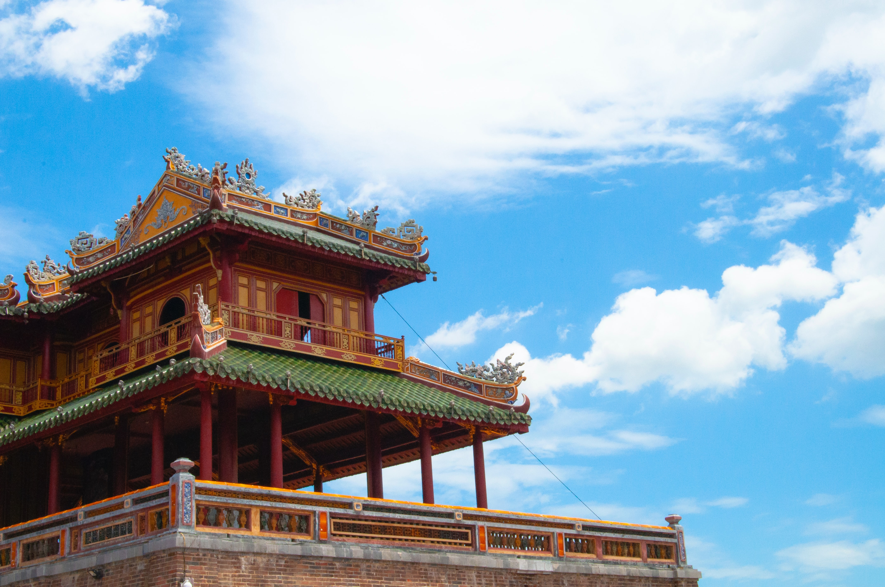

The Meridian Gate (Vietnamese: Ngọ Môn, Chinese character: 午門), also known as the South Gate, is the main gate to the Forbidden City, Huế, located within the citadel of Huế.
Constructed in 1833 in the traditional Vietnamese Nguyen style under the rule of emperor Minh Mạng, it was used by the sovereign as an observation point for troop movements and ceremonies. It was modeled after the Meridian Gate of the Forbidden City in Beijing, China. Like the original in Beijing, the Meridian Gate in Huế is composed of a main, central section and two protruding wings, representing que towers, traditional towers marking the entrance of palaces, temples and tombs.
The gate is divided into two levels: the stone and brick fortress-like base structure, and the more elaborate, palace-like upper level.
The ground level has five entrances, of which the centre one was always reserved for the monarch's use only. The two, slightly smaller, side entrances were reserved for mandarins, soldiers and horses. The two small arched entrances on the side were for the rest and commoners.
The upper level consists of the "Five-Phoenix Pavilion" (Lầu Ngũ Phụng). From the main hall, the emperor would watch troop movements and his subjects bringing homage. The pavilion's roof is decked in imperial yellow, glazed ceramic roof tiles. On the roof tiles are various animals and creatures to ward off evil. The main hall is flanked by two side pavilions, which were reserved for members of the court.
The gate was able to survive the large-scale destruction during the Vietnam War.
Go back to Official website -Forbidden City of Hue